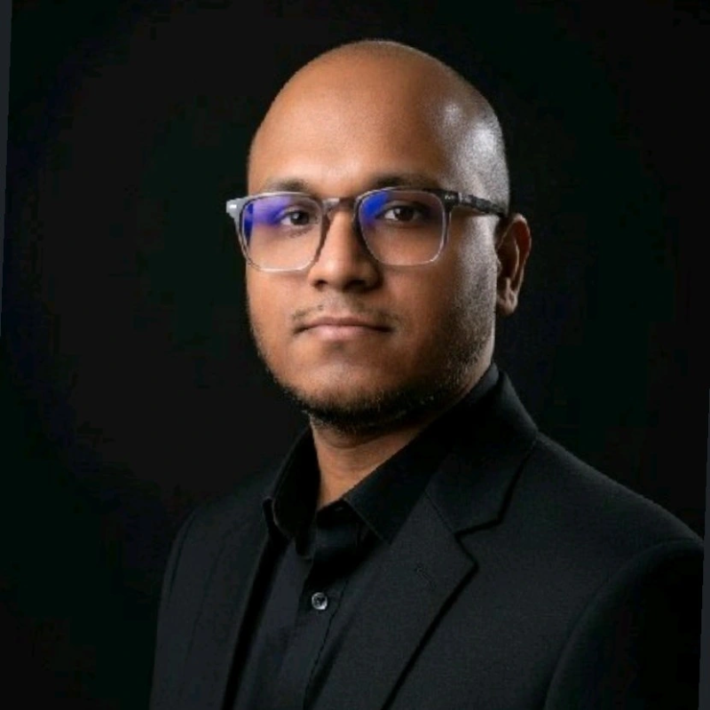

Mobile engineering
I build and maintain mobile applications, working across the development lifecycle — from feature implementation and state management to platform integration, debugging, testing and release support.
I'm Rananjaya, a software engineer with 8 years of industry experience building mobile applications and digital products. My core focus is React Native, JavaScript and TypeScript, with experience across Android and iOS.

Thoughtful engineering, continuous learning and a focus on building useful software.
I build and maintain mobile applications, working across the development lifecycle — from feature implementation and state management to platform integration, debugging, testing and release support.
I'm passionate about AI-native engineering and exploring agentic systems, AI-assisted development, intelligent workflows and modern AI-driven software architecture. I also enjoy open-source projects and privacy-conscious application development.
A practical toolkit built through product development and hands-on engineering.
Experience across mobile product engineering and software development.
Working on mobile application engineering, with a focus on React Native and the continued development and support of digital products.
Worked on the Wiley eReader mobile application, contributing to React Native development, platform support, application security and release activities. The Sri Lankan technology operation transitioned to Virtusa in 2026.
Progressed from an initial software development role and contributed to mobile and application development projects.
Gained early practical experience supporting IT and software-related work.
A selection of mobile applications and open-source engineering work.
An independent HeliBoard fork focused on keyboard customisation, Sinhala language support and privacy-conscious development.
Mobile application engineering for a digital reading experience, including React Native development and Android/iOS platform support.
Worked as a lead developer on a mobile rail-ticket booking application using React Native and Redux.
An Android application helping Sri Lankan farmers purchase agricultural products.
Android mapping application project.
A simple calendar application designed for Sri Lankan users.
Sri Lanka Institute of Information Technology (SLIIT)
National School of Business Management (NSBM Green University)
Interested in mobile engineering, open source or AI-native software development.